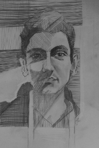

My Name is Maximilian Alber. I am a Ph.D. student in Klaus-Roberts Müller's group at TU Berlin. My research interests are located in the crossover between engineering and machine learning.
Born and raised in the Italian mountains. Fluent in German, English, and Italian. Learned to tackle problems in competitive years at the Olympiads in Informatics. Graduated at the FU Berlin. Studied abroad in Bologna, Italy, and Toronto, Canada. Work experience from free lancing, from software development at Endian SRL, at Fraunhofer FOKUS.
